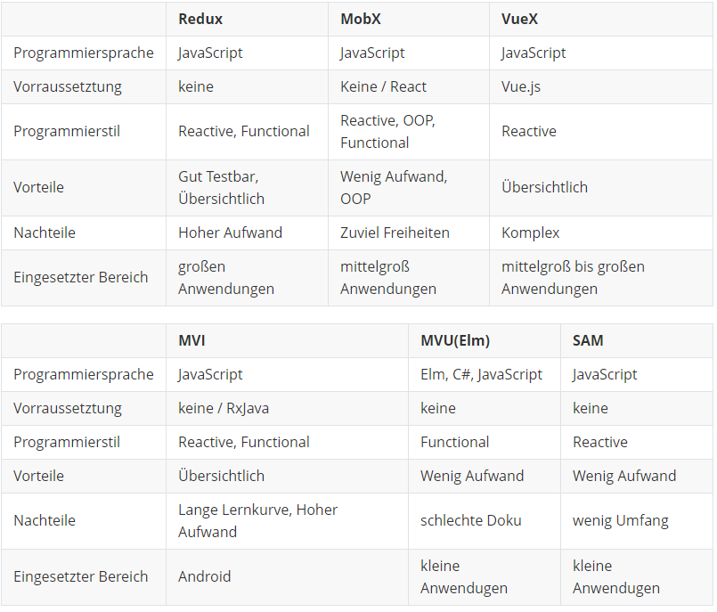

class: center, middle # Frontend Architekturen Fabian Husemann --- # Inhalt - Was ist eine Frontend Architektur - Reactive Programming - Functional Programming - Functional Reactive Programming - Verschiedene Architekturen - Redux - MobX - Vuex - Model View Intent - SAM - Model View Update - Architekturen im Vergleich --- # Was ist eine Frontend Architektur - Kollektion von Tools und Prozessen - Zur Verbesserung von Frontend Code - Für einen effizienten Arbeitsablauf - Häufig unterschätzt! -> „Das Frontend kloppen wir am Ende einfach irgendwie drauf.“ - Moderne Frontend-Systeme haben einen enormen Funktionsumfang - Hohe Anforderungen: - Skalier- und Wiederverwendbarkeit - Bedienkomfort - Unterschiedliche Auflösungen - Schnelle/flüssige Darstellung - Asynchrone Kommunikation - ... und viele mehr - Schon kleine Programmfehler führen zu Benutzerfrustration <!-- Frontend Architektur https://nilshartmann.net/posts/microfrontends/#:~:text=Frontend%2DArchitektur%20unterscheidet%20sich%20in,UI)%20sind%20Teil%20des%20Aufgabenfelds. --> --- # Reactive Programming - Reactive Programming ist ein Programmierparadigma (Programmierstil), dass sich bei der Datenverarbeitung an Datenflüssen orientiert. Dabei werden Änderungen in den Datenflüssen automatisch propagiert. - Observer-Pattern - Ermöglicht einem System ohne einen Zustand auszukommen. - Soviel Asynchronität wie möglich. - Event-driven - Beliebte Bibliotheken, die die reaktiven Programmiertechniken auf der JVM unterstützen: - Akka Streams, Ratpack, Reactor, RxJava, and Vert.x --- # Reactive Programming - Die Funktionen und der auszuführende Code werden entkoppelt, was dazu führt, dass die Betriebssystemebene weniger Kontextwechsel durchführen muss und eine bessere Performance erreicht wird. - Die Entkopplung von geschriebenen Funktionen und ausgeführtem Code führt zu einem erhöhten Schwierigkeitsgrad beim Lesen und Schreiben des Codes. - Warum Reactive Programming? - Der Anwender erwartet eine schnelle Reaktionszeit und 100%ige Verfügbarkeit von unserer Website - Mit Reactive Programming kann man schnell und ressourcensparend interagieren - Bessere Aufteilung beim Programmieren - Nachteile? - Speicherintensiv durch viele Datenströme - Denkweise beim Programmieren ändern --- # Reactive System <img style="width:60%;display: block;margin-left: auto;margin-right: auto;" src="img/reactiveSystems.png"> - Responsive - Das System reagiert nur, wenn es angefragt wird - Schnelle und konsistente Reaktionszeiten - Resilient - Das System bleibt reaktionsfähig, trotz eines Fehlers. - Wird durch Replikation, Eindämmung, Isolation und Delegation erreicht --- # Reactive System <img style="width:60%;display: block;margin-left: auto;margin-right: auto;" src="img/reactiveSystems.png"> - Elastic - Bleibt bei wechselnder Arbeitsbelastung reaktionsfähig - Vorraussetztung: Kein Flaschenhals bei den Komponenten - Message Driven - Asynchrones message-passing - Die "Grenze" der Komponenten, um eine lose Kopplung und die Isolation zu gewährleisten. - Non-Blocking Kommunikation ermöglicht es, Ressourcen nur freizugeben, wenn die Komponente aktiv ist. --- # Event-driven vs. Message-driven - Unterschiede - Nachrichten sind grundsätzlich an wen gerichtet und Ereignisse nicht. -> Nachrichten haben ein klares Ziel und Ereignisse sind Fakten, die andere beobachten können - Belastbarkeit ist durch die Kurzlebigkeit der Ereignisverbrauchsketten schwerer zu erreichen - Nachrichten werden hauptsächlich im Netzwerk verteilt wohin gegen Ereignisse lokal - Message-driven ist aufwändiger zu Programmieren als Event-driven - Wann benutze ich was? - Event-driven wird benutzt um Fakten(Ereignisse) darzustellen. - Message-driven wird als starkes Kommunikationswerkzeug gebraucht. --- # Functional Programming - Ein Programmierstil der sich auf Funktionen fokussiert <img style="width:50%;display: block;margin-left: auto;margin-right: auto;" src="img/pureFunction.png"> - Pure Functions - Ohne SIDE Effect - Immutable Inputs - Müssen einen Rückgabewert haben, da sie sonst nichts tun würden. - Input Datentyp = Output Datentyp --- # Functional Programming - Der Zustand der Anwendung fließt durch die Funktionen. - Bei der objektorientierten Programmierung wird der Zustand der Anwendung normalerweise gemeinsam genutzt. - Wiederverwendbarkeit durch High-Order-Funktionen (mit Generics) <img style="width:80%;display: block;margin-left: auto;margin-right: auto;" src="img/high_order.png"> --- # Functional Reactive Programming (FRP) - Kombination aus Functional Programming und Reactive Programming - Warum Reactive Programming? - Asynchrone Datenströme -> schnelle Reaktionszeit - Warum Functional Programming? - Erhöhte Abstraktionsebene - Bietet Funktionen zum Kombinieren, Erstellen, Zuordnen und Filtern beliebiger Datenströme - flexibel, lose gekoppelt und skalierbar. --- # Redux <img style="float: right;" src="img/redux.png"> - Predictable-State-Container - Eine Bibliothek, um seinen Anwendungszustand zu managen Benutzt zwei Pattern: - Command Query Responsibility Segregation (CQRS) - States können nur durch Befehle erfolgen - Die Befehle werden am Store dispatched - Event Sourcing - Abfolge von Befehle die zu jeder Zeit abgespielt werden kann --- # Redux - Store - Der Store ist ein Speicher, wo der gesamte Zustandsbaum der Anwendung hinterlegt ist. - Kann von jeder Komponente in der Anwendung verwendet werden. - Die Zustände können nur durch Actions verändert werden. - Action - Einfaches Objekt mit den beschriebenen Änderungen der Daten im Speicher. - Benötigt ein Attribute "type" zur Identifizierung der Action. - Dispatch - Sendet die Action an den Store. - Die einzige Möglichkeit einen Zustandswechsel auszulösen. - Reducer - Gibt als Reaktion auf gesendete Actions den neuen Zustand der Anwendung zurück. --- # Redux 3 Prinzipien: - Single source of truth - Global State im Store als Objektbaum - State is read-only - NUR die Actions können einen State verändern. - Changes are made with Pure Functions - Reducer sind pure functions - Input: Vorheriger Zustand und die Aktion - Output: Nächster Zustand --- # Redux - Vorteile - Wenig Überraschung den State zu halten - Gut Testbar - Übersichtlich auch in großen Projekten - Nachteile - Hoher Programmieraufwand - mittelhoher Prozessaufwand, da die Reducer durchlaufen. --- # MobX - Zustandsverwaltung - React und MobX in Kombination - React rendert den Zustand der Anwendung in einen Baum mit renderbaren Komponenten - MobX bietet Mechanismen zum Speichern und Aktualisieren von Zuständen Vorteile: - Wenig Code - Einfach zu lernen - Objektorientierte Programmierung kann auch verwendet werden Nachteile: - Zu viel Freiheit - Schwer zu Debuggen --- # MobX <img style="width:100%;display: block;margin-left: auto;margin-right: auto; float: right;" src="img/mobx.png"> - Action - Wird von Events aufgerufen - Nur eine Action kann den State beeinflussen - State - Observable - Keine Redundanz - Keine abgeleiteten Daten - Computed values - Werte vom State - Über Pure Functions - Reactions - Updatet die UI --- # Vuex Inspiriert von Redux <img style="width: 20%; float: right;" src="img/vuex_logo.png"> - Zustandsmanagement Pattern mit Bibiliothek für Vue.js - Einen Zustandsbaum - Event-driven Wann benutzt man es? - Bei mittelgroßen bis großen Anwendungen - Für ein besseres Zustandhandling außerhalb von Vue Komponenten --- # Vuex - State - Zustand der Anwendung - View - Vue Komponente - Mehrere Views können durch einen State verändert werden. - Action - Führt eine Mutation aus - Mutation - Wie sich der Zustand verändert - Event <img style="width:55%;display: block;margin-left: auto;margin-right: auto;" src="img/vuex.png"> --- # Model View Intent - Entwurfsmuster für Reactive und Functional Programming - Kommt aus dem Bereich Android Programmierung - Kerngedanke von Model View Controller <img style="width:50%;display: block;margin-left: auto;margin-right: auto; float: right;" src="img/MVC.png"> <br /> Controller von MVC passt nicht zur Reaktive Programming - Der Controller manipuliert die View --- # Model View Intent - Ziel ist ein unidirektionaler Datenfluss mit Unveränderbarkeit von Zuständen <img style="width:70%;display: block;margin-left: auto;margin-right: auto;" src="img/unidirektionalerDatenfluss.png"> --- # Model View Intent Wie setzt man nun diesen Kreislauf zusammen? - Kettenfunktionen mit Functional Programming: <img style="width:60%;display: block;margin-left: auto;margin-right: auto;" src="img/modelviewintent.png"> - Mit Reactive Programming <img style="width:50%;display: block;margin-left: auto;margin-right: auto;" src="img/modelviewintent-ablauf.png"> Die View generiert "Events" (Observed Pattern) und übergibt diese der Funktion intent(). --- # Model View Intent - intent() - Nimmt die Eingaben des Benutzers entgegen (bspw. Klick auf UI-Element) - Transformiert die Eingabe zu etwas, dass für die Funktion model() verständlich ist - Bspw. Das einfache Setzen eines Strings im Model, es könnte aber auch die Transformation in etwas komplexeres wie eine Datenstruktur für Aktionen oder Befehle sein. - model() - Nimmt Ausgabe von intent entgegen um das Modell zu manipulieren - Die Ausgabe dieser Funktion ist ein neues Modell - Wir wollen Unveränderlichkeit und daher nicht das bestehende Modell bearbeiten - view() - Nimmt das Modell der model() Funktion entgegen und zeigt diese an. --- # Model View Intent Vorteile: - Ein unidirektionaler und zyklischer Datenfluss. - Ein konsistenter Zustand während des Lebenszyklus von Views. Nachteile: - Lange Lernkurve - In unserem Workflow existieren zwei Modelle - Die angezeigte View - View in der Funktion model() --- # SAM - State-Action-Model Konzepte von React - Event-driven - Reactive Programming Basiert auf TLA+: - TLA+ ist eine formale Spezifikationssprache - Es wird zum Entwerfen, Modellieren, Dokumentieren und Überprüfen von Programmen verwendet, - Zustandsmanagement Grundprinzip: - Zustandsmutationen sind das wichtigste im Model --- # SAM - State-Action-Model Aufbau: - Action - Werden von Events ausgelöst - Mutiert Model - Model - Beinhaltet die Logik des Programmes - Berechnet den nächsten Zustand - "Lernt" den neuen Zustand - State - Berechnet die nächsten Aktionen - View - Zeigt den aktuellen Zustand an Gute Implementierung: - Unidirektionalen Datenfluss - Ein einziger Zustandsbaum - pure functions --- # SAM - State-Action-Model <img style="width:70%;display: block;margin-left: auto;margin-right: auto;" src="img/sam2.png"> Jedes Event beinhaltet die reaktiven Schritte: - propose/accept/learn --- # Model View Update - Auch genannt ELM Architektur - ELM Programmiersprache - Für Interaktive Programme, wie Webapplikationen und Spiele Vorteile: - Einfach und simpel umzusetzen - Hohe Kapselung und Modularität der Komponenten - Hohe Einsetzbarkeit Nachteil: - Schlechte Dokumentation Besteht im wesentlichen aus drei Komponenten --- # Model View Update - Modell - Repräsentiert den Zustand der Anwendung (Daten in der Anwendung) - Mit dem Typ alias definiert (Reference auf Record) - View - Funktionen um Modell in Ausgabe umzuwandeln (also bspw. Modell in HTML Code) - Update - Handelt Interaktionen und verändert das Modell - Nur Update darf Daten des Modells verändern - Input: Nachricht was verändert werden soll - Output: verändertes Modell - (Runtime - Explizit für Elm - Verkettet die 3 oberen Elemente) --- # Model View Update Ablauf: - Endlosschleife - Das Modell wird in View gegeben, dieses generiert den Inhalt, welcher dem Benutzer angezeigt wird - Benutzer interagiert mit Inhalt, die daraus resultierende Änderung am Modell wird durch die Update Funktion erledigt - Nach Durchführung der Update Funktion wird wieder View aufgerufen, die eine neue Ansicht erzeugt <img style="width:50%;display: block;margin-left: auto;margin-right: auto;" src="img/elm-architecture.png"> --- # Architekturen im Vergleich  --- ### Quellen zum: <a href="https://nilshartmann.net/posts/microfrontends/#:~:text=Frontend%2DArchitektur%20unterscheidet%20sich%20in,UI)%20sind%20Teil%20des%20Aufgabenfelds.">[1] Allgemeines zur Frontend Architektur<a> <br /><a href="https://vuex.vuejs.org/">[2] Vuex<a> <br /><a href="https://mobx.js.org/">[3] MobX<a> <br /><a id="vier" href="https://www.reactivemanifesto.org/">[4] Reactive Systems<a> <br /><a id="vier" href="https://www.reactivemanifesto.org/">[5] Functional Reactive Programming<a> <br /><a id="vier" href="https://www.it-economics.de/software-architektur/2019-06/functional-reactive-programming-frp-mehr-als-nur-datenstroeme-und-lambdas-1">[6] Functional Reactive Programming (2)<a> <br /><a id="vier" href="https://dennisreimann.de/articles/elm-architecture-overview.html">[7] Elm Architektur<a> <br /><a id="vier" href="https://guide.elm-lang.org/architecture/">[8] Elm Architektur (2)<a> <br /><a id="vier" href="http://sam.js.org/">[9] SAM <a>